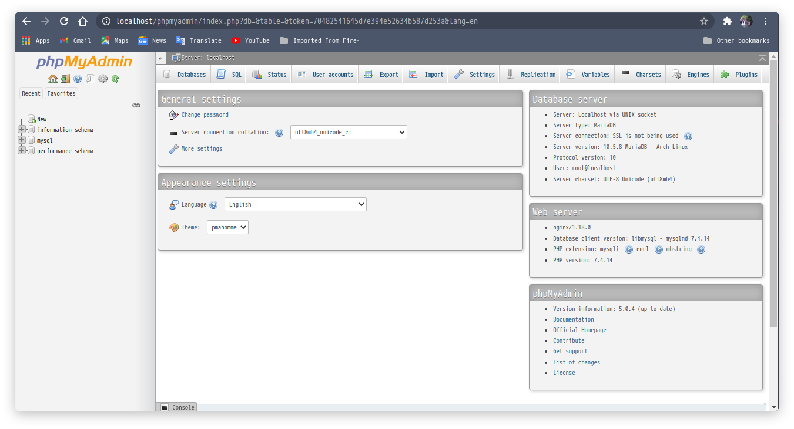

Install Phpmyadmin Di Linux
Saya meneruskan postingan sebelumnya yang membahas tentang install nginx php dan mysql dan kali ini saya akan membagikan cara install phpmyadmin di Linux.
Install Phpmyadmin
Untuk menginstall phpmyadmin langsung masukkan Perintah
sudo pacman -S phpmyadminjika sudah selesai bisa konfigurasikan PHP yaitu pastikan modul ekstensi mysqli dan pdo_mysql sudah aktif. Jika belum maka edit file /etc/php/php.ini lalu uncomment dua baris berikut :
extension=pdo_mysql
extension=mysqli
lalu restart php-fpm
sudo systemctl restart php-fpm
Sub directory dengan symlink
buat symlink dari /usr/share/webapps/phpMyadmin/ ke lokasi /usr/share/nginx/html/ dengan perintah
ln -s /usr/share/webapps/phpMyAdmin/ /usr/share/nginx/html/phpmyadmin
Ya kita sudah selesai instalasi phpmyadmin di linux, seharusnya jika kita buka alamat url localhost/phpmyadmin sudah tampil seperrti berikut

Yea sudah berhasil…. jika ada yang kurang jelas bisa tanyakan di komentar.